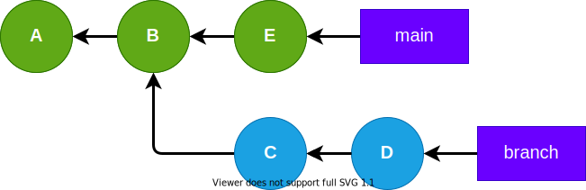
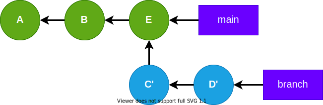
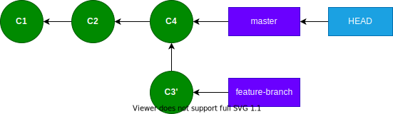

Git Internals
Part 4: Rebasing
Part 3: Merging

Overview
- Why rebase?
- "Golden Rule of Rebase"
- Rebase vs. Merge
- What is "rebase"?
- Rebase Example
Why rebase?
To update developer-owned branches.
Golden Rule of Rebase
Avoid rebasing public branches.
Git Rebasing Public Branches Works Much Better Than You'd Think üòà
Why rebase vs. merge?
To update developer-owned branches without merge commits.
What is "rebase"?
To establish a new base for a branch.
Branch Before Rebase

Branch After Rebase

Rebase Example
Descendent Branch

$ git merge-base --is-ancestor master feature-branch && \
echo yes || echo no ⏎
yes
Descendent Branch
$ git rebase master ⏎
Current branch feature-branch is up to date.
Descendent Branch
Commit C4 on master branch. ➜
Divergent Branch
$ git merge-base --is-ancestor master feature-branch && \
echo yes || echo no ⏎
no
Divergent Branch
git rebase master ➜
Rebased Branch
Does feature-branch descend from master?
Rebased Branch
$ git merge-base --is-ancestor master feature-branch && \
echo yes || echo no ⏎
yes
Rebasing creates new commits
Merging Rebased Branch
git checkout master ➜
Merging Rebased Branch

git merge feature-branch ➜
Merging Rebased Branch
Fast-forward merge
Why rebase? (continued)
Fast-forward merge is possible.
No merge commit! ü•∞